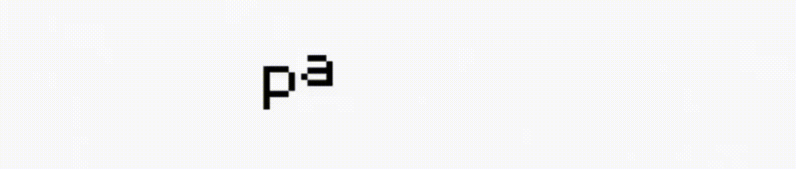

Lectura 01
MediaPipe
Posición de palma —
Velocidad corporal 0%
Zona de la palma —
MediaPipe reconoce hasta dos manos y ubica el centro de cada palma dentro de una de las cuatro zonas.
Instalación audiovisual interactiva
La canción permanece incompleta hasta que el cuerpo activa sus fragmentos. Posición, movimiento, luz y sonido construyen la experiencia.
La cámara está detenida.

Lectura 01
MediaPipe reconoce hasta dos manos y ubica el centro de cada palma dentro de una de las cuatro zonas.
Lectura 02
OpenCV mide la intensidad del movimiento. JavaScript combina esa energía con la zona ocupada por la palma para modificar el sonido, el brillo y el recorrido visual.
Reflexión semiótica
Interpreta una estructura conocida: identifica las manos, sus articulaciones y el centro de cada palma. Convierte el cuerpo en posiciones que pueden activar una zona.
No sabe si observa una mano, una persona o un objeto. Compara imágenes y registra cuánto cambia la escena. Esa energía modifica la intensidad visual, el brillo y la fuerza del sonido.
Ambas imágenes son huellas del mismo gesto, pero ninguna es el cuerpo mismo. La interfaz construye una relación simbólica entre posición, movimiento, color y sonido.
¿Qué queda del cuerpo cuando una máquina lo transforma en posición, movimiento, luz y sonido?